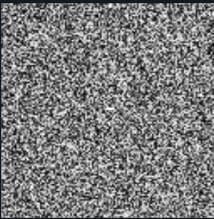

About the Project
This project visualizes ocean flow and temperature by projecting oceanographic data onto a texture and applying a 2D Line Integral Convolution (LIC) technique to acquire the flow visualization.
Implementation
Data Preparation with ArcGIS
ArcGIS Pro is a desktop application from Esri that provides exclusive access to Esri’s portal where millions of geographical databases are hosted and geoprocessing tools to extract and manipulate the data. Here, I use two raster layers: Ocean Surface Currents and Global Sea Surface Temperature , then apply geoprocessing tools to combine these two layers into data that can be read into the shader pipeline.
Project Raster to Point
A raster layer is a layer consisting of data cells organized into rows and columns. Raster layers have different dimensions, sizes and units. Here, the temperature layer has a raster cell of size 27820m with 1441 rows and 2174 columns where the ocean surface current has cell sizes of 1 deg with 1440 x 158. Thus, the temperature layer need to be projected onto the currents layer with the same size as the cell. The resulting layer is 360 x 178. . Each point has the rounded x coordinate (ranging from -180, 180) and y coordinate (ranging from -90, 90), Then, Raster to Point and Extract MultiValue to Point is used to extract the raster the cell to a list of points containing value from both layers: current direction and magnitude as well as temperature.

Encode Texture Information
To encode the texture information, each point’s longitudinal and latitudinal coordinates are first converted into texture coordinates to accurately locate the corresponding pixel. Trigonometric calculations are then used to determine the x and y components of each vector based on its current direction. Once the data is extracted into a CSV file, a script reads the table and writes it into a raw texture file format, where the first 8 bytes store two 4-byte integers representing the S and T image dimensions, followed by the RGBA values for each texel. Each texel stores the x and y flow components, temperature, and magnitude in its respective RGBA channels.
2D Line Integral Convolution (LIC) in Shader

The basemap and flow texture were sampled in the fragment shader. Displacement based on flow vectors created the LIC effect, visualizing the ocean currents, while land areas were rendered black.
Encode Temperature
Instead of random noise, a color-mapped temperature was added to the LIC texture to enhance visualization.

References
- ShadersForVisualization2.v5
- Glman Home Page